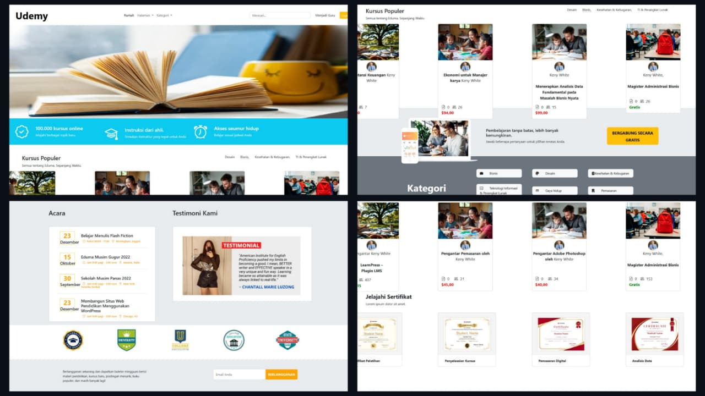

E-Learning Course Platform merupakan website pembelajaran online yang dikembangkan untuk menyediakan akses terhadap berbagai program kursus dan pelatihan dalam satu platform terintegrasi. Sistem ini memungkinkan pengguna untuk menjelajahi katalog kursus berdasarkan kategori, melihat informasi instruktur, memperoleh informasi sertifikat, mengakses jadwal event edukasi, serta membaca testimoni peserta. Dengan desain yang responsif dan antarmuka yang interaktif, website ini dirancang untuk memberikan pengalaman belajar yang mudah, nyaman, dan informatif bagi pengguna.
... Lihat Selengkapnya